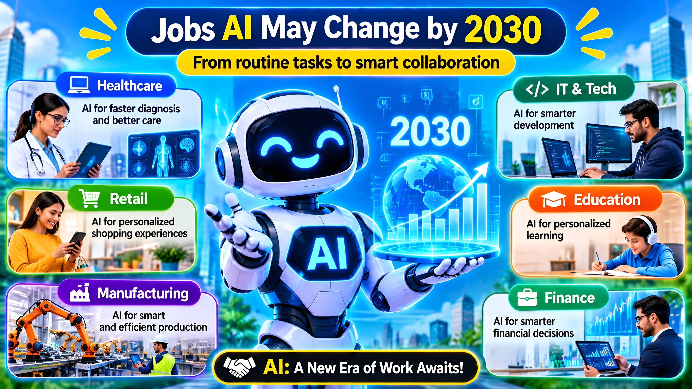
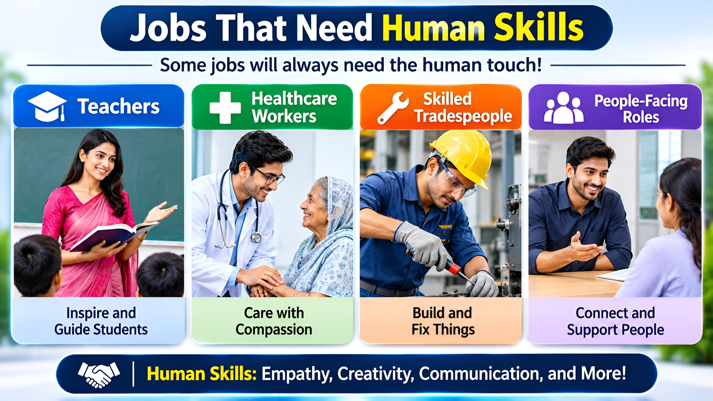
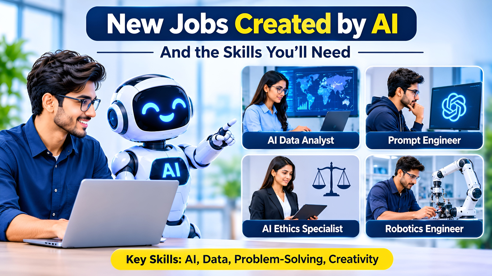

Artificial intelligence (AI) is changing the way people work. It can write text, answer questions, create images, analyze information, and complete many digital tasks. As these tools become more common, many workers are asking an important question: Will AI replace human jobs by 2030?
The answer is not simple. Some jobs may become less common, while others may change or grow. In many workplaces, AI is more likely to help people complete tasks than to replace every worker. Understanding these changes can help people prepare for the future.
1. Will AI Replace Human Jobs?
AI can already perform parts of many jobs. For example, it can prepare simple reports, organize information, answer common customer questions, and help create written content. These abilities may reduce the time people spend on certain tasks.
However, a job usually includes many different responsibilities. A customer service worker may answer questions, understand customer problems, and handle difficult situations. AI may help with common questions, but a person may still be needed when a situation requires careful judgment or personal understanding.
The International Labour Organization (ILO) reported in 2025 that around one in four workers worldwide are in occupations with some level of exposure to generative AI. However, the report says most jobs are more likely to change than become completely unnecessary.
This means AI exposure does not automatically mean job loss. It means some parts of a job may be completed with the help of AI, while other parts still need people.
2. Jobs That AI May Change by 2030
Jobs that involve repeated digital tasks, large amounts of information, or predictable processes may see major changes. AI can often complete these tasks quickly, although human checking may still be important.

Data Entry and Basic Administrative Work
Data entry workers often move information between documents, forms, and computer systems. AI tools can read documents, extract information, and organize data. This may reduce the need for some manual data entry tasks.
Administrative assistants may also use AI for scheduling, document preparation, email writing, and organizing information. However, coordination and communication with people may still require human involvement.
Customer Support
AI chatbots can answer common questions, provide basic instructions, and help customers find information. Businesses may use them to handle simple requests at any time of day.
However, complaints, unusual problems, and sensitive conversations may still need a human support worker who can understand the situation and make decisions.
Basic Content Writing and Translation
AI can create simple articles, product descriptions, email drafts, summaries, and translations. This may change the work of some writers, translators, and content teams.
But useful content still needs fact-checking, clear thinking, creativity, and an understanding of the audience. Human editors may remain important for reviewing and improving AI-generated work.
Bookkeeping and Basic Financial Tasks
AI-powered software can help organize financial records, read invoices, categorize expenses, and prepare basic reports. These tools may reduce some repetitive bookkeeping work.
Financial decisions, unusual transactions, legal responsibilities, and complex accounting issues still require careful human review.
Some Retail and Routine Office Tasks
Self-checkout systems, automated inventory tools, and AI-powered software can handle some routine retail and office tasks. This may change the responsibilities of cashiers, clerical workers, and other employees.
These changes will not happen at the same speed everywhere. The result will depend on business needs, technology costs, customer preferences, and local conditions.
3. Jobs That May Be Less Affected by AI
Not every job can be completed through software. Many occupations require physical work, direct human contact, practical experience, or decisions based on complex real-world situations.

Healthcare and Care Work
Doctors, nurses, care workers, and other healthcare professionals work directly with people. AI can help them review information, organize records, and support some medical tasks.
However, patients also need personal care, communication, physical assistance, and decisions based on their individual situations. These responsibilities make human involvement important.
Teaching and Education
AI can explain topics, create practice questions, and help teachers prepare learning materials. Students can also use AI tools to study and review lessons.
But teaching involves more than sharing information. Teachers guide students, understand their difficulties, encourage them, and manage classrooms. These human responsibilities remain important.
Skilled Trades and Repair Work
Electricians, plumbers, mechanics, construction workers, and repair technicians often work in changing physical environments. They must inspect real objects, identify problems, and use tools safely.
AI may help with instructions, planning, or diagnosis, but completing many physical repairs still requires practical skills and human judgment.
Jobs That Depend on Human Relationships
Some roles depend heavily on trust, empathy, negotiation, and personal communication. For example, social workers, counselors, and certain management roles deal with situations that can be different for every person.
AI may provide support, but people often need another person to listen, understand their situation, and take responsibility for important decisions.
These jobs are not completely protected from AI. Their tasks may still change as new tools become available.
4. Why AI May Not Replace Every Worker
AI can perform many useful tasks, but it also has limitations. A tool may produce an incorrect answer, misunderstand an instruction, or miss important details. People must often check its work before using the result.
There are several reasons why human workers will continue to matter.
- Human judgment: Important decisions often need context, experience, and responsibility.
- Communication: People must understand emotions, explain difficult ideas, and work with others.
- Physical work: Many jobs require hands-on skills in real-world environments.
- Creativity: New ideas often need original thinking, personal experience, and human direction.
- Trust and responsibility: Businesses and customers may need people to review decisions and take responsibility for the results.
There are also practical limits. Some businesses may not have the money, equipment, or skilled workers needed to use advanced AI systems. Others may prefer human service for certain tasks.
Therefore, the effect of AI will depend on the type of work, the workplace, and how people choose to use the technology.
5. New Jobs AI May Create
New technology can remove some tasks while creating demand for new skills and services. AI is also creating work for people who develop, manage, check, and apply these systems.

Some areas that may offer more opportunities include:
- AI and machine learning: Professionals who build, improve, and maintain AI systems.
- Data analysis: Workers who study information and help organizations make better decisions.
- Cybersecurity: Specialists who protect computer systems, networks, and digital information.
- AI integration: Professionals who help businesses use AI tools in their daily operations.
- Robotics and automation: Workers who design, install, operate, and maintain automated machines.
- AI-related training: People who teach employees how to use AI tools safely and effectively.
The World Economic Forum's Future of Jobs Report 2025 estimates that major global trends could create 170 million jobs and displace 92 million jobs by 2030. This would result in a net increase of 78 million jobs.
These figures cover several changes, including technology, economic conditions, demographic shifts, and the green transition. They are not a prediction of jobs created or lost by AI alone.
The report also identifies technology, data, and AI-related roles among the areas expected to grow. However, the number of opportunities will depend on how businesses and economies develop.
6. Skills People May Need in the AI Era
As AI changes the workplace, workers may need to learn new skills. Knowing how to use AI tools can be helpful, but technical knowledge is only one part of preparing for the future.
Some useful skills include:
- Digital skills: Understanding computers, online tools, and common workplace software.
- AI literacy: Knowing what AI tools can do, where they may fail, and how to use them responsibly.
- Critical thinking: Checking information, finding mistakes, and making careful decisions.
- Communication: Explaining ideas clearly and working well with other people.
- Creativity: Developing useful ideas and finding different ways to solve problems.
- Problem-solving: Understanding challenges and choosing suitable solutions.
- Continuous learning: Being ready to learn new tools and improve existing skills.
The OECD's research on skills in the AI age highlights the importance of basic education, digital skills, critical thinking, creativity, and collaboration.
People do not need to become AI engineers to benefit from AI. Workers in many fields can start by learning how AI tools relate to their own work and where those tools can save time.
7. How to Prepare for the Future of Work
People cannot know exactly which jobs will change by 2030. However, they can take practical steps to become more prepared.
Learn AI Tools Related to Your Work
Start with tools that can help you in your current job or chosen career. For example, office workers can learn AI-assisted document tools, while designers can explore AI features in design software.
Improve Your Main Skills
Do not depend only on AI tools. Build strong knowledge in your field, practice solving real problems, and improve your communication and decision-making skills.
Learn to Check AI Results
AI can make mistakes. Always review important information, check facts, and protect private or sensitive data before using an AI-generated result.
Keep Learning Over Time
Technology changes quickly, so learning should not stop after one course or certificate. Follow changes in your industry and practice new skills when they become useful.
Students can also prepare by building strong basic knowledge, learning digital skills, and gaining practical experience through projects or training.
Build Skills That Work Well With AI
Try to become someone who can use technology to do better work. People who combine professional knowledge with AI skills, critical thinking, and human communication may be better prepared for changing job requirements.
Final Thoughts
AI will change many jobs by 2030, but it does not mean that all human workers will be replaced. Some routine tasks may become automated, some occupations may change, and new opportunities may appear.
The most useful approach is to understand how AI affects your field and keep improving your skills. Instead of seeing AI only as a threat, learn how to use it as a tool while building the human abilities that technology cannot easily replace.
The future of work will not be shaped by AI alone. It will also depend on people, businesses, education, and the choices societies make about technology.